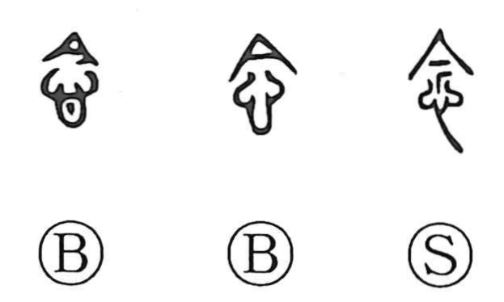

念

Kun: | On: nen
to think ・ thought ・ mind ・ intention
Explanation
念 combines 心, the heart, with 今 as its phonetic. 今 pictures a lid with a stopper projecting below it, closing a jar or bottle. The closure keeps what is inside from escaping.
The same image is applied to the heart. A thought or feeling is held deeply within, as contents are enclosed beneath a lid. 念 therefore means keeping something in mind, dwelling on it, or harbouring an inward thought.
The word can name the thought itself and the attachment that makes it difficult to put aside. Through interchange with 唸 it also means reciting or reading aloud. Inward retention and repeated utterance become connected ways of sustaining something in attention.